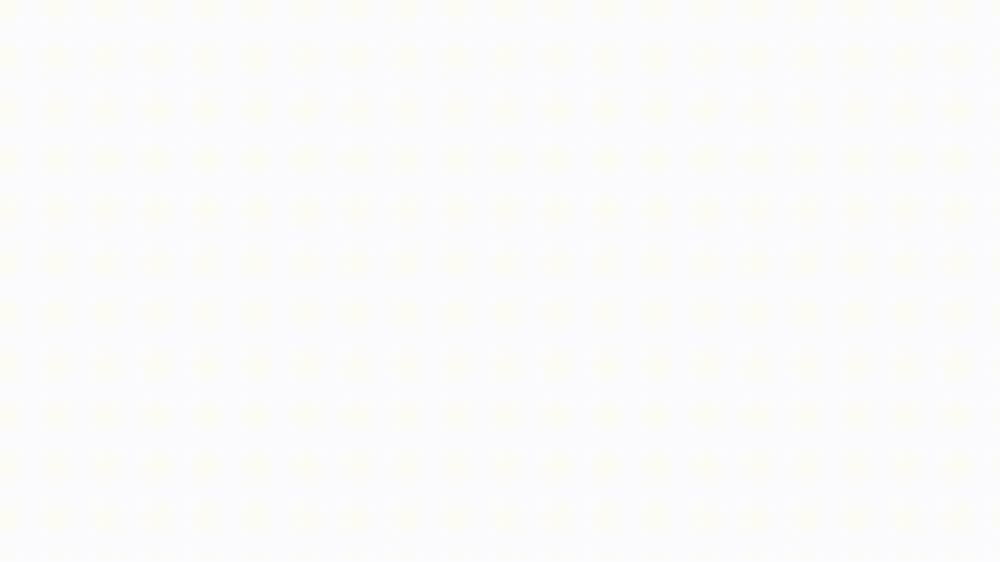

<header class="fixed bg-white shadow w-full py-2.5">
	<nav class="max-w-screen-xl mx-auto">
		<div class="flex justify-between px-7 md:px-8 lg:px-10 xl:px-10">
			<a routerLink="/" class="flex -my-2">
				
			</a>
			<div class="hidden md:flex items-center">
				<ul class="inline-flex flex-grow xl:gap-x-8 lg:gap-x-8 md:gap-x-6 sm:gap-x-4 w-auto">
					<li><a routerLink="/" fragment="inicio" class="text-purple-ssd hover:text-orange-ssd font-medium px-0.5 transition duration-300 pb-2 hover:border-b-[2.5px] hover:border-orange-ssd">Inicio</a></li>
					<li><a routerLink="/" fragment="nosotros" class="text-purple-ssd hover:text-orange-ssd font-medium px-0.5 transition duration-300 pb-2 hover:border-b-[2.5px] hover:border-orange-ssd">Nosotros</a></li>
					<li><a routerLink="/" fragment="clientes" class="text-purple-ssd hover:text-orange-ssd font-medium px-0.5 transition duration-300 pb-2 hover:border-b-[2.5px] hover:border-orange-ssd">Clientes</a></li>
					<li><a routerLink="/" fragment="soluciones" class="text-purple-ssd hover:text-orange-ssd font-medium px-0.5 transition duration-300 pb-2 hover:border-b-[2.5px] hover:border-orange-ssd">Soluciones</a></li>
					<li><a routerLink="/" fragment="contacto" class="text-purple-ssd hover:text-orange-ssd font-medium px-0.5 transition duration-300 pb-2 hover:border-b-[2.5px] hover:border-orange-ssd">Contacto</a></li>
				</ul>
			</div>
		</div>
	</nav>
</header>